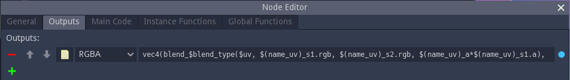
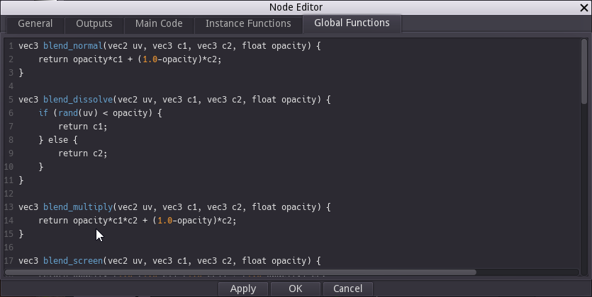

Shader nodes¶
Most nodes in Material Maker are shader nodes. Their outputs are not defined as images, but as shader programs that calculate
the color of a pixel from its coordinates for greyscale, color and RGBA outputs
the signed distance of a 2D point from its coordinates for SDF2D outputs
the signed distance of a 3D point from its coordinates for SDF3D outputs
When shader nodes are connected, Material Maker will combine their shader programs. As a consequence, most shader nodes are resolution independant.
Any shader node can be made editable using the Control+W keyboard shortcut.
Editing a shader node will show the Node Editor window.
Creating and editing shader nodes¶
A shader node will always have outputs that will be connected to the inputs of other nodes. It may also (and probably will) have parameters that can be modified in the user interface, and inputs to receive data from other nodes.

Inputs and parameters can be added in the General tab, but first, you may want to choose a nice name for your new node.
Parameters¶
To add a parameter, just click on the green “+” button in the Parameters section. A new parameter line will be created with a red “-” button on its left to delete the new parameter. On this line:
the first text field is the name of the parameter, that will be used in the shader code
the second text field is an optional label that will be displayed in the user interface. There are a few tricks with this label that can help tweaking the UI.
the yellow document button can be used to add a tooltip to the parameter.
the option button can be used to select a type for the parameter. The available types are float, size, enum, boolean, color and gradient
on the right of the type selector, controls can be used to define a default value and constraints for the parameter
float parameters can be assigned a control variable in the 2D preview
To use a parameter in your shader code it is necessary to prefix it with a dollar sign. So a foo parameter can be refered to by $foo or $(foo) in the shader code. Gradient parameters need to be used as functions with a single float parameter. So mygradient should be refered to as $mygradient($uv.x) if you want to spread the gradient on the x axis ($uv is an implicit variable used by Material Maker for UV coordinates).
Inputs¶
Inputs can be added and removed, have a name and a label (but no label trick) just like parameters. they also have a type that can be Greyscale, Color or RGBA. Please note that Material Maker will convert automatically if you connect an input to an output of a different but compatible type.
The yellow document button can be used to define a name and add a tooltip to the input.
On the right of the input type, you must define a default value that will be used if the input is not connected. The default value is a GLSL expression that must evaluate to a float for Greyscale, a vec3 for Color or a vec4 for RGBA. Inputs default values can use the $uv implicit variable. You may want to define interesting default inputs for your nodes, so it is possible to see their effect without connecting the inputs (the screenshot above is the Blend filter and has a vertical and an horizontal gradient as default inputs).
The “Function” checkbox changes the way the code is generated for this input. When set to true, the input is generated as a function and can be used in the Instance functions section. If the parameter is false, the input code is inlined. It is not advised to set this parameter to true when not required, because generating functions can have an impact on performance.
In shader code, inputs are used as functions that take a single vec2 parameter. For example $myinput(2.0*$uv+vec2(0.2, 0.3)) refers to myinput, scaled and translated.
Outputs¶
Outputs are defined in the Outputs tab and are very similar to inputs, but instead of a default value, the generated value of the output should be specified as a GLSL expression (float for Greyscale, a vec3 for Color or a vec4 for RGBA). This expression can use everything in the node (parameters, inputs, main code, instance functions and global functions) except other outputs. And generally, complex nodes mean complex output expressions. You may thus want to write simple expressions in the Outputs tab and keep complex code in the 3 remaining tabs.
The yellow document button can be used to define a name and add a tooltip to the output.
Adding the actual GLSL code¶
Now that parameters, inputs and outputs are defined, the code that will actually generate the texture will be in the 3 remaining tabs.
Global functions¶
The Global functions tab is used to define the functions that are necessary to implement the texture generator. Those functions will be included only once (when the node is used of course) and cannot use parameters or inputs. This is typically where you will paste the code you prepared in Shadertoy.
Instance functions¶
Instance functions are functions that are unique to an instance of the node. They will typically depend on parameters, and those could either be used as parameters when calling global functions, or to form global function names (as shown in the screenshot below: the blend_type parameter is an enum whose value is the suffix of one of the blend functions defined in the Global Functions panel).
Instance functions must also have a unique name, and the name implicit variable can be used to do this: whenever $name or $(name) is used, it will be replaced with a unique name that depends on the node instance.

Main code¶
This tab contains code that will be inserted into the main combined shader and can be used to define variables that will be used in the outputs expressions. This can be useful either to simplify the outputs or to define variables that will be used by several outputs (hence optimizing the shader code).
Main code can use the node’s parameters and inputs as well as instance and global functions.
Since a node can be sampled for several different UV expressions in the same combined shader, it is necessary for all variables declared in the main code section to have a unique name for each (node instance, UV expression) pair. Material Maker provides the name_uv implicit variable for this.